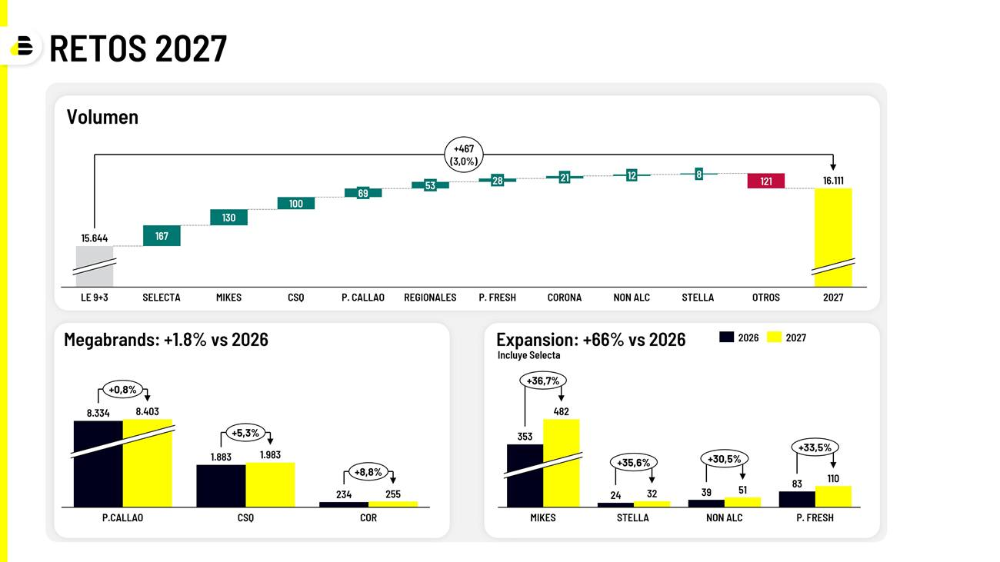
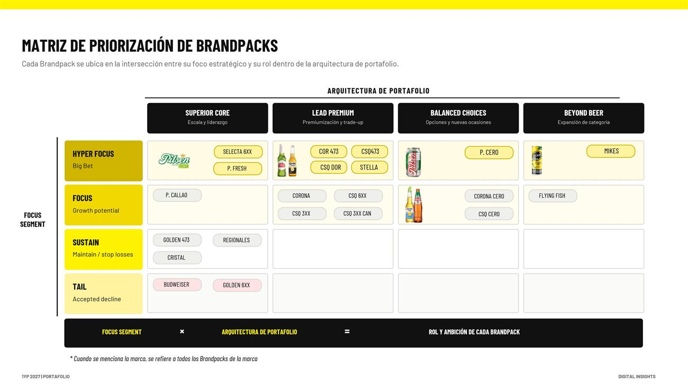
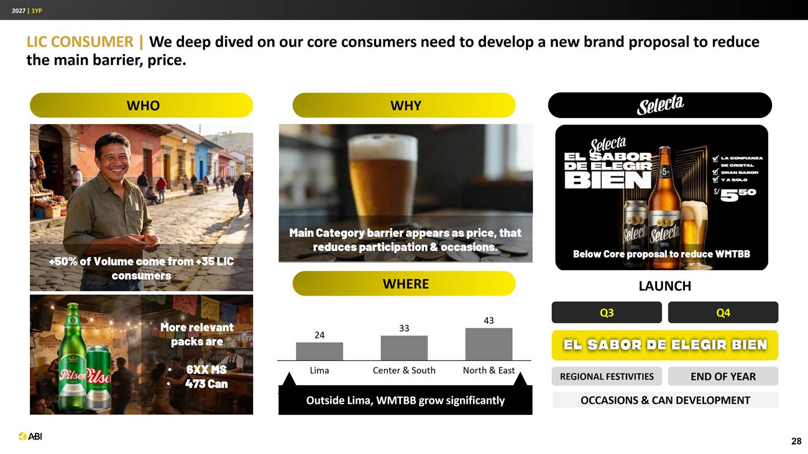
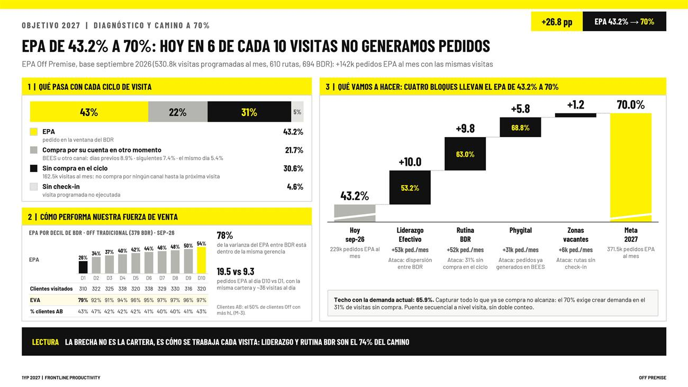
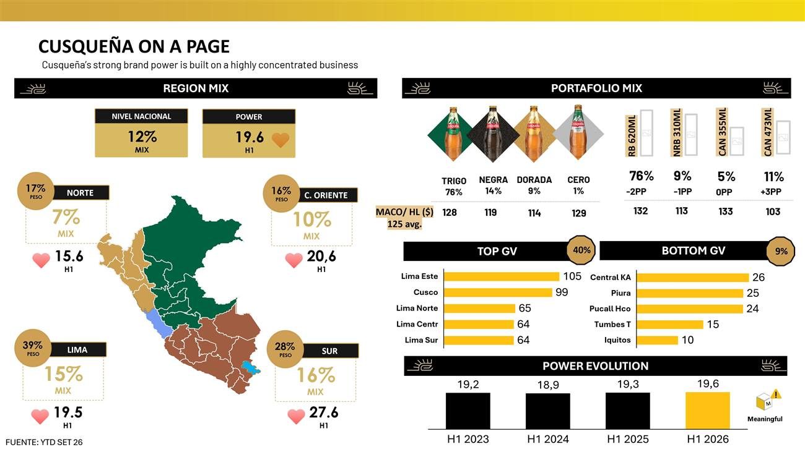
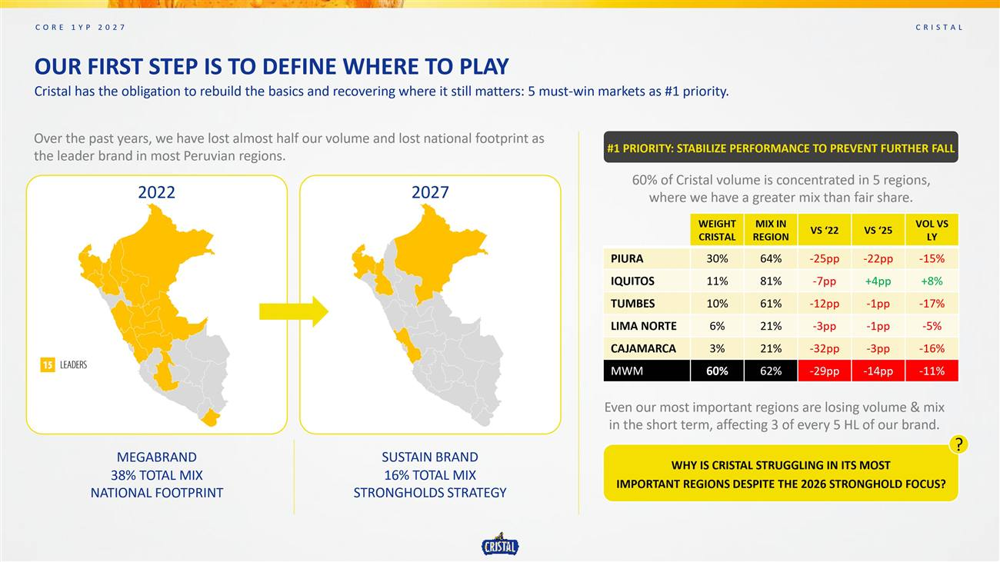
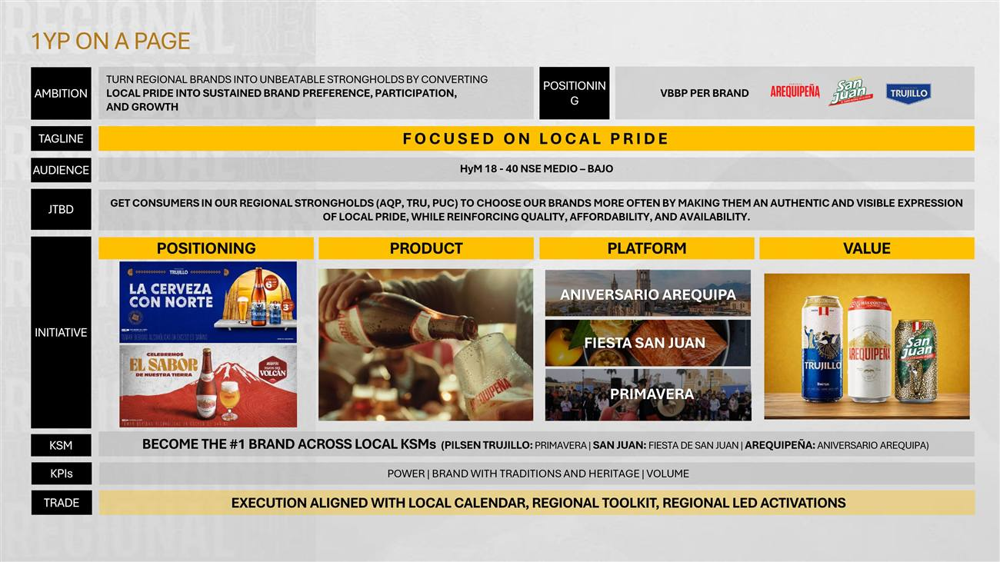
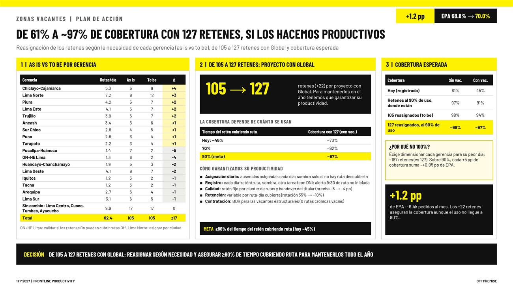
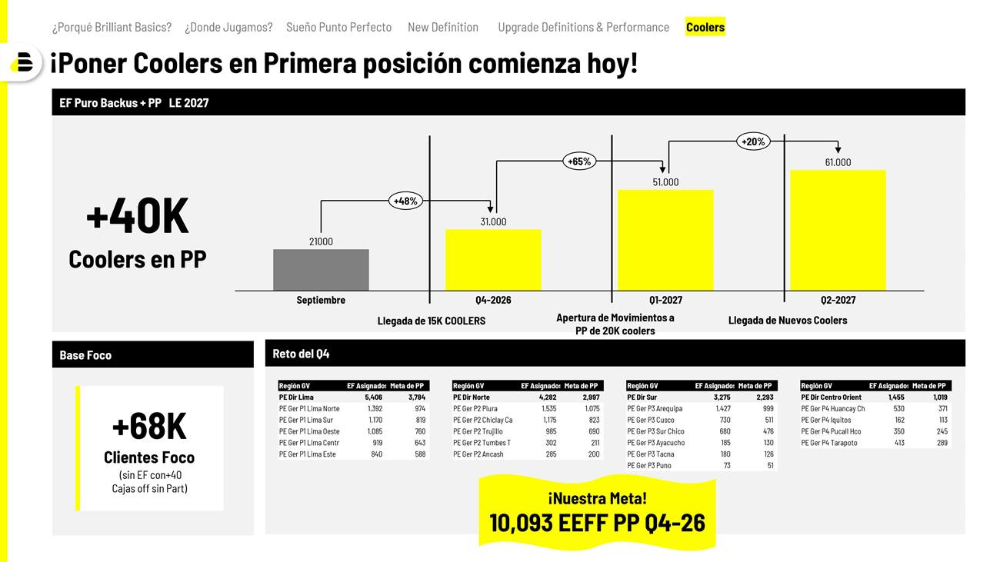
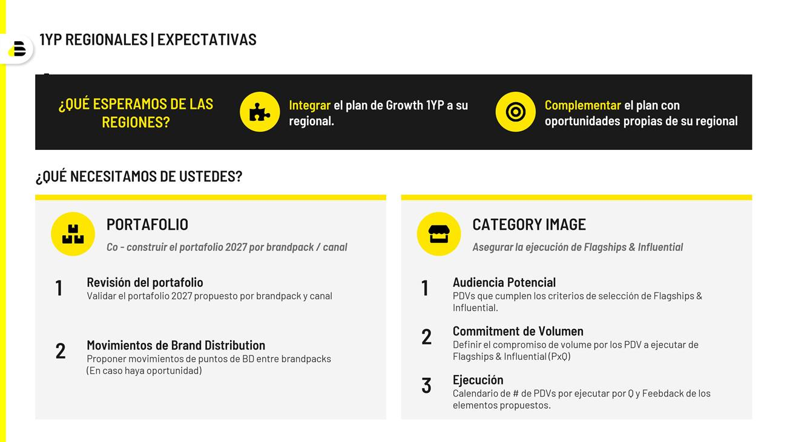

1YP 2027: lo que plantea el plan nacional y qué significa para Centro Oriente
Resumen ejecutivo
- El plan nacional crece +3% con el core casi plano. Perú pasa de 15.6 a 16.1 MM HL; Megabrands +1.8% y Expansion +66%. El KPI central es Brand Distribution (+10%) con ventas por POC constantes.
- Casi la mitad del volumen de Centro Oriente (45%) está en marcas Sustain o Tail (Cristal, San Juan, Golden), que no tienen campaña integrada (IMC) nacional en 2027. A nivel nacional ese peso es 31%. Los motores del plan (Hyper Focus) pesan 2.9% en CO vs 6% nacional.
- Selecta, la innovación más grande del año (160 mil HL), es una marca below core a ~S/5.50 para nuestro consumidor de bajos ingresos fuera de Lima. Para CO es oportunidad (~30 mil HL de referencia) y riesgo de canibalizar Cristal, San Juan y Golden.
- EPA (% de visitas que terminan en pedido) es la mayor palanca de Growth. En CO cada punto vale 0.3 mil HL al mes; +10 pp con supervisores en la venta equivalen a ~36 mil HL al año.
- Category Image: CO es la dirección con menor Commercial Relevance (0.6%) y el plan le asigna 4.6% en 2027 (×7.7), apoyado en eventos y fiestas locales.
- En clientes, CO es la mejor del país en servicio y lealtad (Cero Fallas, canje de puntos), pero la última en autonomía de pedido y en recuperación de clientes perdidos.
1El plan nacional: core plano, crecimiento por portafolio y distribución
El 2026 cierra como el año de mayor volumen de la historia de Backus (15.6 MM HL, +8.2%), con Pilsen Callao explicando ~130% del crecimiento. Para 2027 la ambición es +3% (16.1 MM HL). De los +467 mil HL, Selecta (+167) y Mike's (+130) aportan más que todas las megabrands juntas. "Otros" restan −121 mil HL.

Growth traduce ese volumen en una meta de Brand Distribution de +10% (1.16 → 1.28 MM al mes), con mayor exigencia en DAS (+15.5%) y On premise (+11.1%) que en Off (+8.7%). El 80% del incremento de BD se carga a los brandpacks Hyper Focus, que hoy son solo el 6% del volumen.
2Casi la mitad del volumen de CO está fuera de los motores del plan
La matriz nacional clasifica cada brandpack según su foco (Hyper Focus, Focus, Sustain, Tail) y su rol en la arquitectura de portafolio. Cristal, las marcas regionales y Golden 473 son Sustain (mantener o frenar pérdidas); Golden 6XX es Tail (declive aceptado). Ninguno es elegible para IMC en 2027.

Volumen de Centro Oriente por segmento de la matriz (YTD Ene–Oct, mil HL)
| Segmento | Qué incluye en CO | YTD 26 | Mix CO | Δ vs 25 | vs 25 | Mix nacional |
|---|---|---|---|---|---|---|
| Hyper Focus | Fresh, CSQ 473, COR 473, Mike's | 67.1 | 2.9% | +40.8 | +154.6% | 6% |
| Focus | Pilsen Callao; Corona y Cusqueña (resto) | 1,217.6 | 52.1% | +171.5 | +16.4% | 64% |
| Sustain | Cristal, San Juan, Golden 473 | 1,025.0 | 43.8% | −128.7 | −11.2% | 30% |
| Tail | Golden 6XX y resto de Golden | 24.2 | 1.0% | −12.7 | −34.4% | 1% |
| Sin clasificar | Otras marcas | 3.6 | 0.2% | +0.9 | +36.0% | — |
| Total CO | 2,337.6 | 100% | +71.9 | +3.2% | 100% |
3Selecta: la apuesta below core llega a nuestro consumidor
Selecta by Cristal se lanza en Q1 2027 con 160 mil HL, la innovación más grande del año. Es una cerveza below core con beneficio de ISC, dirigida al hombre +35 de bajos ingresos (LIC), que genera más del 50% del volumen de la categoría y que está dejando de comprar por precio. Fuera de Lima, el tiempo de trabajo necesario para comprar una cerveza es casi el doble (43 min en Norte y Oriente vs 24 en Lima).


4EPA: la mayor palanca de Growth depende de cómo se trabaja la visita
Hoy 43% de las visitas programadas termina en pedido; la meta 2027 es 70%. Growth muestra que el 78% de la diferencia entre vendedores ocurre dentro de la misma gerencia (misma cartera y mercado), y que con el supervisor presente en la venta el EPA sube +10 pp. Hoy solo el 1% de las visitas va acompañada y el supervisor registra 9.6 horas semanales en el mercado (meta: 40).

5Category Image: CO es la última en Commercial Relevance
Commercial Relevance mide qué porcentaje del volumen de cada gerencia pasa por puntos flagship e influential (ejecuciones de alto impacto). CO cierra 2026 en 0.6%, frente a 5.7% de Lima y 3.5% del total. Para 2027 se le asigna 4.6%, con Huancayo como principal aporte (8.9%, de ellos 6.0% en eventos).


6Las marcas en CO frente al plan nacional
| Marca | Rol nacional 2027 | YTD CO vs 25 | Lo que muestra CO |
|---|---|---|---|
| Cusqueña | Focus; 473 y Dorada Hyper Focus; 2 IMCs | −13.0% | Power en CO 20.6, mayor que Lima (19.5), pero la peor región en volumen. El problema es precio y disponibilidad, no la marca. |
| Mike's | Hyper Focus; IMC Q4 | +185.5% | Mix sobre cerveza 1.6% (+1.1 pp), el mayor salto del país. |
| Cristal | Sustain; sin IMC | −18.9% | Iquitos es must-win: 11% del volumen nacional de Cristal, mix 81%, +8%. |
| San Juan | Regionales; Sustain | −2.2% | Stronghold Pucallpa con KSM Fiesta de San Juan. |
| Corona | Focus; IMC Q2 | +17.6% | El menor crecimiento del país; Coronita pierde −26% de BD en CO. |
| Pilsen Callao | Focus; IMC Q3; Pilsen Cero | +24.4% | Motor del año; adherencia de precio nacional 65%. |




7Clientes: mejores en servicio y lealtad, últimos en autonomía
| Indicador del plan Growth | Centro Oriente | Nacional | Meta 2027 |
|---|---|---|---|
| % clientes que piden solos (quincenales y sin visita) | 57.6% (el menor) | 60.3% | 67% |
| Cobertura 2+ días de reparto | 59.9% | 60.8% | 78.1% |
| Días sin visita D-1 con pedido autónomo | 4.1% | 4.5% | 8.0% |
| Cero Fallas | 57.1% | 55.2% | 58.7% |
| Clientes perdidos que se recuperan (L12M) | 5.6% (el menor) | 6.1% | 7.3% |
| Canjeadores de puntos (L3M) | 57.1% (el mejor) | 54.3% | 70% |
| Tiempo desde el último canje | 3.0 meses (el mejor) | 3.7 meses | 2.5 meses |
La base de compradores nacional cae −5.5% en un año (en CO, −2.8% de POCs compradores), por migración a mayoristas y cierre de bodegas. Growth apuesta al pedido autónomo: Flex (pedido mínimo −50%) dio +8.7% de HL en quienes lo adoptaron, y en DAS se busca pasar de 10% a 50% de adopción.


8Movimientos operativos que nos tocan directamente
- Retenes: la propuesta nacional reasigna retenes según la necesidad diaria de cobertura. Pucallpa–Huánuco pasa de 7 a 2 (el caso más sobredimensionado del país), Huancayo de 5 a 3, Iquitos de 3 a 2 y Tarapoto de 3 a 4.
- Coolers en primera posición: el reto del Q4 asigna a CO 1,455 equipos de frío, con meta de 1,019 en primera posición.
- Ángeles BEES: 6 de los 31 asesores que educarán a clientes sin visita estarán en CO.
- Porte en el nivel Black: el beneficio baja el porte a 14 días de 4% a 3% y a 21 días de 6% a 4%. Esos valores no coinciden con la tabla de porte que usamos (3.75% a 14 días); conviene validarlos con Revenue.


9Lo que nos piden y lo que debemos llevar el 16 de noviembre

El plan nacional está construido desde Lima: los flagships Off se ejecutan en "Lima +5", en High End solo aparece Tarapoto–Laguna Azul, y Pucallpa, Tarapoto e Iquitos quedan en el clúster de menor prioridad. Por eso CO necesita llegar con oportunidades propias y cuantificadas.
Decisiones y entregables propuestos
| Decisión o entregable | Con quién | Cuándo |
|---|---|---|
| Portafolio 2027 de CO por brandpack y canal, con movimientos de BD hacia Mike's, CSQ 473 y Fresh | Growth · Portafolio | 16-nov |
| Lista de flagships e influentials por GV con compromiso de volumen (PxQ) y calendario | Category Image · GVs | 16-nov |
| Volumen, plazas y precio de lanzamiento de Selecta en CO (incremental vs canibalización) | Marketing · Revenue | Q4 2026 |
| Plan propio para Cristal Iquitos y San Juan Pucallpa (marcas Sustain sin IMC nacional) | Marketing · Regional | Q4 2026 |
| Validar el ajuste de retenes Pucallpa–Huánuco (7 → 2) frente a la cobertura real | Ventas · RRHH | Dic 2026 |
| Rutina de líderes: supervisores 40 h con BDR y gerentes 20 h en mercado (+10 pp de EPA) | Ventas | Ene 2027 |